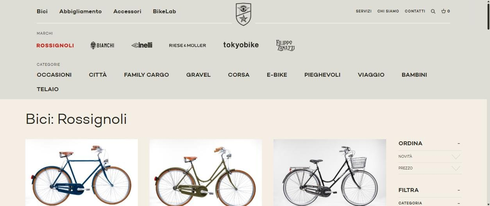
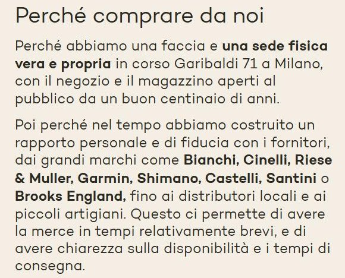
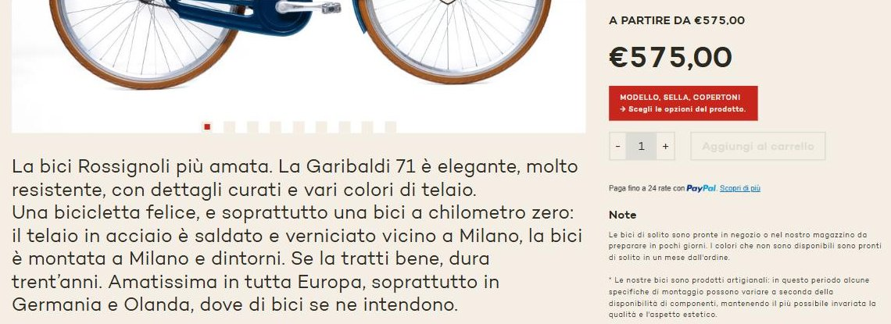

Rossignoli: a Milan bike maker since 1900, filed as one brand among six.
Rossignoli builds its own steel bikes near Milan, has been on Corso Garibaldi for about a century, holds the city's civic award, and writes some of the warmest product copy in Italian retail. Its website is organised like a multi-brand bike shop — which it also is — and the maker gets lost inside the shop.
Reviewed 27 September 2026 · Scope: homepage, Chi siamo (About), the Rossignoli bikes page, three product pages (Garibaldi 71, Classica, Milano), the services pages (business, rentals, workshop) and the terms page at rossignoli.it, compared with three Milan bike shops. Public material only: no interviews, no data, nothing internal. Rossignoli's site is in Italian; quotes are given in the original with my English translation in brackets.
This is speculative work, not a client relationship
I picked Rossignoli and this gap on my own initiative — no engagement, no affiliation, nothing commissioned, nothing beyond what's public on their site. It exists to show how I'd approach a Positioning Audit, not to claim I was hired for one. If Rossignoli would rather this page not exist, email me and it comes down.
Rossignoli has been making bikes in Milan for more than 125 years, and its website files the maker under the shop.
The steel frames are welded in Monza and painted around Milan. The shop has been open on Corso Garibaldi for about a hundred years, the family is on its fifth generation, and the City of Milan gave it the Ambrogino in 2021. On the site, the house bikes sit in a “Marchi” (Brands) menu as one logo among six, next to Bianchi and Cinelli, and the page that lists them is titled “Rossignoli Archives” in the browser tab. The whole site is in Italian only — while its best-selling bike is described as loved above all in Germany and the Netherlands.
Where the brand stands today, in four categories.
Product & proof
Voice
Maker story reaching the buyer
Reach beyond Italian speakers
Two strong scores are rare in these audits. Rossignoli doesn't need a new voice or a new story. It needs the story it already tells to stop being filed under someone else's logo.
The right headline, then a department-store floor plan.
The homepage opens well: “Ricomincia con una Rossignoli.” (“Start again with a Rossignoli.”) It's personal, it assumes you'll own one, and it uses the family name as a noun. The third slide adds “Dal 1900 una lunga storia.” (“Since 1900, a long story.”) Then the page turns into thirteen tiles: the house bikes, an end-of-summer sale, Bianchi, Cinelli, Riese & Müller e-bikes, clothing, a bike-fit test, gift cards, family cargo bikes, bikes for companies, Garmin, helmets, shoes. Every tile is useful. Together they say “bike shop,” and the maker is one tile of thirteen.
The navigation does the same. Open “Bici” and the house brand appears in red at the start of a row of logos — Rossignoli, Bianchi, Cinelli, Riese & Müller, tokyobike, Filippo Zanazzi. Click it and the browser tab reads “Rossignoli Archives,” a default label from the site's software. The description written for search engines gets it right — “la bottega storica di biciclette diventata simbolo di Milano” (“the historic bicycle shop that became a symbol of Milan”) — but a visitor never sees it on the page.

Six assets, all published, most of them one click deep.
A maker, not only a shop
“Le bici con telaio in acciaio sono prodotte a Milano e dintorni: il telaista è a Monza, i verniciatori tra il nord e il sud di Milano, insomma quasi a chilometro zero.” (“The steel-frame bikes are made in and around Milan: the framebuilder is in Monza, the painters between the north and the south of Milan — practically zero-kilometre.”) Aluminium and carbon frames are bought in, then painted, specced and assembled in-house. Very few shops in Milan can say this. On the site it is one paragraph in the middle of the About page.
A century on one street
“Perché abbiamo una faccia e una sede fisica vera e propria in corso Garibaldi 71 a Milano” (“Because we have a face and a real, physical home at Corso Garibaldi 71 in Milan”), open to the public “for a good hundred years.” On 7 December 2021, Sant'Ambrogio's day, the City of Milan awarded the shop the Ambrogino, its civic merit award. Five generations are listed by name, from Giorgio of Arena Po, “the pioneer,” to Matia and Matteo, “the present.”

Candour most shops wouldn't publish
The same section admits: “Lo sappiamo bene: ci sono sicuramente altri siti dove alcuni articoli hanno prezzi più competitivi.” (“We know it well: there are certainly other sites where some items are priced more competitively.”) Its answer isn't a discount. It's that “i nostri dipendenti sono come membri della nostra famiglia, hanno tutti un bel contratto e … paghiamo regolarmente i fornitori” (“our staff are like members of our family, they all have a proper contract, and … we pay our suppliers on time”). That is a values position — the kind brands pay agencies to invent — written plainly and hidden on the About page.
A voice people remember
The Garibaldi 71 product page calls it “Una bicicletta felice” (“A happy bicycle”) and adds “Se la tratti bene, dura trent’anni.” (“Treat it well and it lasts thirty years.”) The Classica is “La bici Rossignoli per tutti, in strada dal 1946.” (“The Rossignoli bike for everyone, on the road since 1946.”) This is copy with a smile and a promise in it, and it's consistent across the house models.

People with names
The About page introduces the mechanics one by one: Ercole, “from Sicily,” is the boss of the via Solari workshop; Tommaso is a bike-polo player and former messenger — “non fatelo arrabbiare” (“don't make him angry”). It's the most human staff page I've read on an Italian retail site.
Proof from outside
A bike fleet and maintenance for Moncler; the bikes for Uniqlo's first store in Italy; collaborations from Tod's to AC Milan, Inter and Juventus; a video by YesMilano, the city's promotion agency, titled “Rossignoli: Cycling heart of the city.” And the Milano model's page notes, “Qui protagonista degli spot Velasca.” (“Here starring in the Velasca ads.”)
The same idea sold by a younger shop, in two languages.
| Brand | Lead message | Proof on the page | Who it's for |
|---|---|---|---|
| Rossignoli | “Ricomincia con una Rossignoli.” (“Start again with a Rossignoli.”) | Since 1900; own steel frames made near Milan; the Ambrogino (2021); Moncler and Uniqlo projects | Milan riders, companies, film and fashion — in Italian only |
| La Ciclistica Milano | Artisanal, personalised city and touring bikes — “Telai 100% Italiani” (“100% Italian frames”) | Founded in the early 2000s; custom builds; workshop; a programme for hotels and resorts | City riders, travellers, hotels — in Italian and English |
| La Bicicletteria | A reference point for cycling fans, “fondata nel 1985 sui Navigli di Milano” (“founded in 1985 on Milan's Navigli”) | Wide range across e-bike, gravel, road and MTB; used bikes | Enthusiasts across disciplines |
| La Stazione delle Biciclette | Sales and service for cargo, folding, touring, urban and artisanal bikes | Several shops in Milan; online catalogue; customisation | Urban riders and families |
La Bicicletteria and La Stazione sell range. La Ciclistica Milano sells the idea closest to Rossignoli's — Italian-made city bikes, built to order — and it does so in Italian and English, with an offer for hotels. Rossignoli has more of everything that idea needs: a century more history, its own framebuilder, a civic award, a street address people recognise. It tells that story to Italian readers only, and mostly below the fold.
Competitor lines are quoted or summarised from their homepages and homepage descriptions as published on 27 September 2026.
Who buys, and what tips them.
The Milanese regular
Knows the shop, books a service on WhatsApp, buys a Garibaldi 71 for their partner. The current site serves them well; the story is a bonus, not a reason.
The visitor and the international Milanese
Finds Rossignoli through YesMilano, Instagram or by walking down Corso Garibaldi, and wants the souvenir that lasts thirty years. They can't read the site, and right now “il servizio di noleggio per turisti è momentaneamente sospeso” (“the rental service for tourists is temporarily suspended”). This is the buyer the product copy says already exists — in Germany and the Netherlands — and the one the site does least for.
The company
Wants a fleet, a branded bike, a location for an event. The business page is good and has real names on it. What would help: leading with “we build them,” since a fleet from the maker is a different offer from a fleet from a shop.
What the brand could say instead.
A draft built only from Rossignoli's own published words — the positioning a paid engagement would pressure-test, not a finished answer.
Draft positioning
“Milan's bicycle maker since 1900. Built near Milan, sold on Corso Garibaldi.”
It leads with the part no ordinary shop can claim — making — and keeps the shop as the proof of place. Bianchi and Cinelli stay on the site; they just stop sharing the top line with the family name.
Message order
Made: the frames, welded in Monza and painted around Milan. Where: Corso Garibaldi 71, open for about a century. Who: five generations and mechanics with names. Also: the brands we trust, a workshop, bike fitting, fleets for companies.
Structure
Give “Le Rossignoli” its own place in the menu, separate from “Marchi.” Fix the “Rossignoli Archives” page title. Put the zero-kilometre paragraph on the house-bikes page, where people choose. Then English — starting with the About page and the Garibaldi 71, the model its own copy calls loved in Germany and the Netherlands.
If this were a paid engagement, it would start here.
This week
- Rename the house-bikes page title from “Rossignoli Archives” to something like “Biciclette Rossignoli — fatte a Milano dal 1900.”
- Add one line under the homepage hero: frames welded near Milan, sold on Corso Garibaldi for about a century.
- Move “Le biciclette Rossignoli” out of the brands row into its own menu item.
This month
- English versions of the About page, Contatti and the house-bike pages, starting with the Garibaldi 71.
- Put the zero-kilometre paragraph and the Ambrogino on the house-bikes page.
- Bring the YesMilano video and the Moncler / Uniqlo work onto the homepage.
This quarter
- A “Fatte a Milano” page: the framebuilder in Monza, the painters, the assembly — as far as they want to be named.
- Relaunch tourist rentals with an English booking page and the Garibaldi 71 as the rental bike.
- Test the house bikes as the first four homepage tiles and measure clicks through to product pages.
What this spec version leaves out: a paid Positioning Audit adds a working session with the family, sales data by model and channel, and a look at who actually buys online versus in the shop. None of that happened here. The direction above is a first draft from public material, meant to be argued with.

Want this kind of read on your own brand?
€1,200 · 1 week · no obligation beyond the audit itself